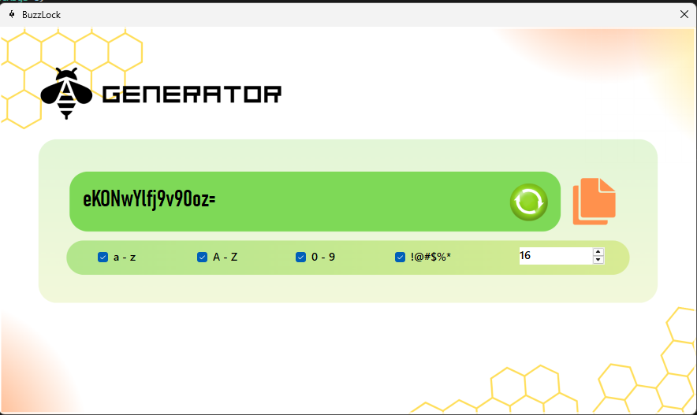
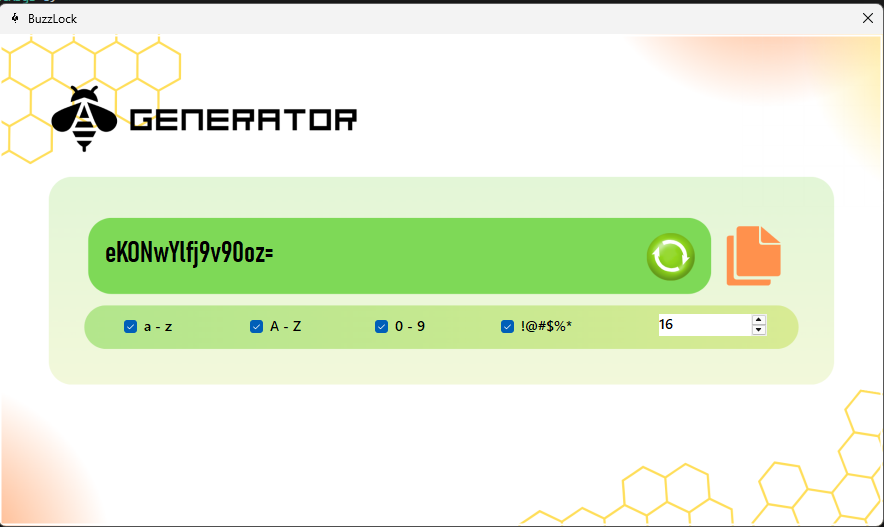
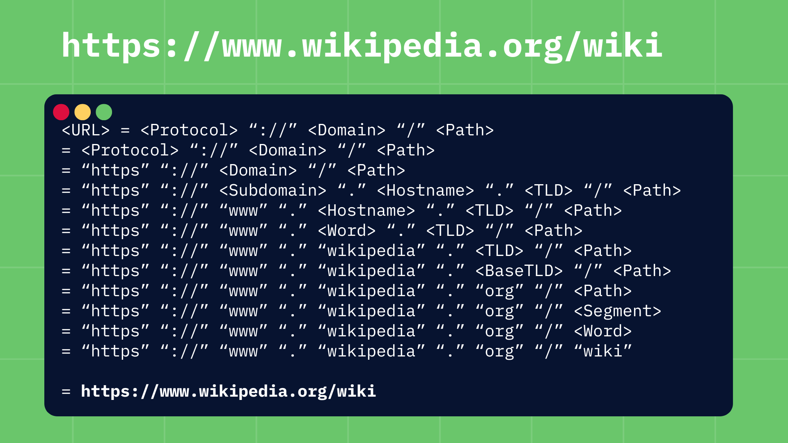
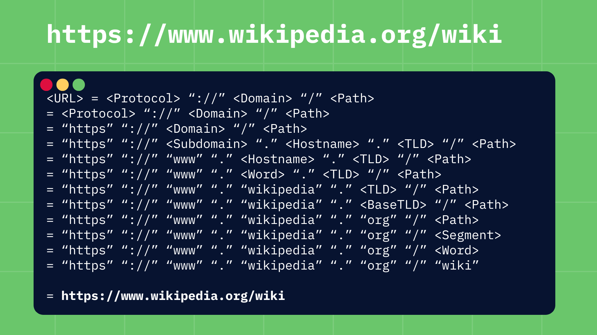

About Me

Hello! I'm Psyryll Andre Javier, a passionate Computer Science student at Mapua Malayan Colleges Mindanao. I love exploring programming, building projects, and learning new technologies. This portfolio showcases my achievements and projects so far.
I am focused on web development, software engineering, and problem-solving through creative programming solutions. I enjoy working on real-world projects and continuously expanding my skills.
Outside academics, I enjoy collaborating with others, experimenting with UI/UX design, and constantly upgrading my skills by exploring new tools, frameworks, and modern development practices.

 

 
